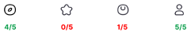

Fast Food
Usability Testing
Project Overview
Fast Food is a hypothetical food delivery app that a team of student researchers and I evaluated as part of a class project. The two key differentiating features of Fast Food are its focus on "rescued food" (surplus food from restaurants) and its ability to save preferences for multiple users.
Client
Dr. Brooke Wooley (Course Instructor)
Team
- Ai Sano (Researcher)
- Andres Navarro (Researcher)
- Charizma Gupta (Researcher)
- Chase Rigby (Researcher)
Timeline
12 weeks, 3-6 hours/week
Process
- Heuristic evaluation
- Competitive analysis
- User testing
- Data analysis
- Recommendations
Research Questions
We conducted user research to answer these two questions about Fast Food:
- How easily and successfully do users perform basic functions in the app?
- How easily and successfully do users interact with the key differentiating features of Fast Food?
In other words:
- Does Fast Food function well as a food delivery app?
- Do users see a compelling reason to choose Fast Food over similar, better-established apps like Doordash or Grubhub?
Heuristic Evaluation
First, we conducted a heuristic evaluation using Jakob Nielsen's 10 Usability Heuristics to get a sense of Fast Food's general usability. This allowed us to form a hypothesis for our first research question before we jumped into user testing: how easy or difficult might Fast Food be to use in general?
Overall, most of the usability issues we found fell under three categories, suggesting that these were the areas where our research participants might have the most trouble:
- Unclear labels and terminology (Match between system and real world)
- Information overload (Aesthetic and minimalist design)
- Lack of consistency within the interface (Consistency and standards)
Summary
Based on our heuristic evaluation, Fast Food was mostly functional as a food delivery app. However, the lack of clarity surrounding "rescued food", as well as some issues with information hierarchy and consistent navigation, made it difficult for us to use. We predicted that these would also show up as pain points for our users during the testing phase.
Unclear labels and terminology
What is "rescued food"?
The biggest potential usability issue in this area jumped out at us as soon as we started investigating the app: it took us quite a while to figure out what exactly "rescued food" was supposed to mean. This may not have been so difficult if we could have just asked the developer to clarify their intentions. Then again, our users couldn't ask, either, and they were far less likely to be invested in figuring it out from the bits and pieces of information buried in the interface.
Ambiguous navigation icons
Another area of concern was the icons in the navigation tab at the bottom of the screen. It wasn't immediately clear to us (without inspecting the Figma file) what most of these icons meant. There were technically text labels for each icon, but they only appeared after the user actually tapped on it to open the corresponding page. Overall, this made navigating the app more difficult than necessary.
Information overload
Menu item screen
There was so much competing information on the menu item page that it was difficult to tell what was important and what wasn't. The fact that Fast Food was only available on a small, mobile-sized screen meant that this was an issue of both information hierarchy and text size--because the Nutrition Facts section (less important) was placed right next to the description of the menu item (very important), the text size was so small that neither section was clearly legible. For users with low vision, this would have been even more of an issue.
Crucially, some information that would have been very important for users to know was left out. Listing the ingredients for each menu item with photos made for a visually striking presentation, but there were no accompanying text labels. This would have created a barrier for screen reader users, as well as users with food allergies. Even for sighted users, it wasn't always clear which ingredients these photos referred to. One photo in particular included both mushrooms and red peppers--which one was actually in the dish?
Account settings
There were also some information hierarchy issues on the account settings page. The most-used functions like notifications and payment settings were at the top, as they should have been, but the buttons for each were so small that they still ended up getting lost among the other options on the screen. Also, some functions that were rarely-used but important had the same visual weight as functions that were rarely-used but unimportant--imagine trying to report an unsafe situation, misclicking, and ending up being asked to leave a review on the Google Play store!
Lack of consistency within the interface
Several areas of the prototype (primarily the navigation and checkout screens) were inconsistent depending on how they were accessed. These would have been relatively straightforward to fix, but we thought they was still worth mentioning since they would have had a negative impact on a user's ability to place orders using the app.
Competitive Analysis
Next, we wanted to get an idea of what made Fast Food stand out compared to other food delivery apps. In other words, we used this to form a hypothesis for our second question: Do users have a compelling reason to choose Fast Food over similar apps such as Doordash?
Direct competitors
We chose four other food delivery apps to compare with Fast Food:
- Doordash
- Grubhub
- Too Good To Go (this one was particularly relevant because of its focus on surplus food!)
- Favor
Indirect competitors
These were a little more abstract, but we chose four indirect competitors based on Fast Food's key differentiating features of "rescued" (or used) items and the ability to save profiles for multiple users:
- Best Buy (offers "open-box" items)
- Mercari (offers used items)
- Netflix (allows multiple users to save profiles)
- Chipotle (group ordering functionality and a focus on sustainability)
Summary
We identified four key areas Fast Food could focus on to set itself apart from the competition:
- Put more focus on "rescued food" concept (this is unique!)
- Develop a desktop/web platform
- Use social media to build trust with customers, especially surrounding the "rescued food" concept
- Address the usability issues identified in the heuristic evaluation
Preliminary Insights
At this point, we were able to form a hypothesis for each of our two research questions:
- If the Fast Food prototype were implemented as-is, it would function as a food delivery app.
- However, the usability issues surrounding Fast Food's two key differentiating features (group orders and rescued food) meant that users probably would not have a reason to use the app unless those issues were addressed.
User Testing
Research design
We conducted five remote, moderated usability tests, each of which was attended by one moderator and one notetaker. We designed six task scenarios:
- Log into their account
- Set up delivery address
- Search for and order fried rice
- Delete account
- Order for a group of people and customize their orders
- Search for rescued food
The first four tasks represent the basic functions users would expect from a food delivery app, while the last two tasks are related to Fast Food's key differentiating features. All participants performed the same set of tasks on a desktop computer, using the Figma prototype for the mobile app. We also asked users to think aloud while completing the tasks to help us understand their thoughts, feelings, and expectations.
Read our moderator scriptRecruitment criteria
We screened participants based on the following criteria:
- Sample size: 5
- Gender: Mix
- Age: Mix
- At least two participants who live in a household with one or more people besides themselves
- None of the participants:
- work for any food delivery apps/websites,
- are in app development or design, or
- have participated in product/market research in the last 6 months
Data Analysis
Difficulty scale
Even though most users thought the app was usable overall, looking at a breakdown of the individual task ratings reveals a drop-off in subjective usability starting at Task 4, and especially for Tasks 5 and 6. Given that Tasks 5 and 6 are directly related to two of the app's key differentiating features (group ordering and rescued food respectively), this could indicate a need for these parts of the app to be redesigned.
SUS analysis
The overall System Usability Scale (SUS) rating for the app was 78. This is better than the average SUS score of 68, but our task-by-task analyses revealed that there is room for improvement in certain key areas. The range of SUS scores varied widely, with one participant giving a score of 30 and the others giving a score of 90. In the pre-test questionnaire, this participant reported using delivery apps more frequently compared to the other participants, which could suggest that the usability issues in this app could impact experienced users more.
Key Insights and Recommendations
Allow users to browse by category
“Normally I search for food by categories rather than by dish because most times I do not know exactly what I want.”
Often, users don't know exactly what they want to order when they open a food delivery app. Many participants commented that they typically start by browsing through the different restaurants and cuisines available rather than searching for a specific dish, and were surprised to find that they couldn't do so in this app. Combined with the information hierarchy issues we mentioned earlier, this could make the overall search process frustrating for users.
Recommendations
Allow users to browse for food by categories (like cuisine). This would prevent information overload by letting users drill down from broad to specific labels, making the discovery process more enjoyable and less overwhelming.
Build trust around rescued food
“Sounds like it got thrown away and taken out with the garbage while it was in a container.”
While 3 out of our 5 participants were already familiar with the concept of rescued food, only 1 thought the app explained it clearly. Also, several participants commented that the concept sounded unappealing--why would they want to eat food that was about to be thrown away?
Recommendations
Clearly explain where the "rescued" food comes from, what quality users can expect, and emphasize the environmental impact of reducing food waste.
Search by restaurant, not by dish
Searching for food by the dish rather than by the restaurant is inconvenient. Currently, there is no way to explore the entire menu of a given restaurant. This means the user must start a new search to order a different dish from the same restaurant.
Recommendations
Update the search results page to display restaurants rather than the specific dishes themselves. This would give users more flexibility to browse the offerings within each restaurant if they are not sure what they want to order. This is especially important for rescued food, since specific dishes are not always available!
Redesign navigation icons
- Home- Most users understood that this icon led to the home page, but several commented that they only knew because of its position on the far left. Changing this to a standard "home" icon would make it easier for users to understand.
- Promos- None of the participants understood what this icon meant.
- Cart- Several participants thought this led to the Order History page and commented that it didn't look like a shopping cart.
- Account- This icon was clear to all the participants, and likely doesn't need to be changed.